Semana 6
1. El principio de la organicidad: El mundo en equilibrio.
Significa que un objeto es un sistema cuando la variabilidad que experimenta la totalidad es menor que las variabilidades de cada una de sus partes o componentes. Los mecanismos homeostáticos buscan el desequilibrio y ponen al sistema en equilibrio.
El mundo puede ser representado como un sistema o como una colección de muchos sistemas, se puede decir que es un sistema dentro de “El sistema”; estas actuan y se interrelacionan unos con otros dentro de una realidad dinámica.
La organicidad se caracteriza de los sistemas abiertos, estos mantienen en estado ordenado mientras se hace la ectracción de neguentropía del medio. Es decir, esta capta la informacion del medioambiente suficiiente para sobrevivir.
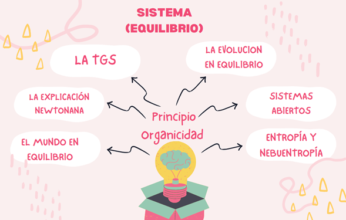
La entropía nos muestra que todo sistema termodinámico tiende al equilibrio; el universo tiende a distribuir la energía uniformemente.
Esta se define como la tendencia que tienen todos los sistemas a alcanzar su estado más probable, el estado más probable es el caos, la desorganización, la eliminación de diferencias que hacen lo identificable.
Sin embargo, es la neguentropia la que está destinada a mantener y mejorar la organización del sistema.
Para que haya un control exactamente no es posible, puesto que no se tienen estándares de comparación.
Se mantiene una modificación de los objetivos.
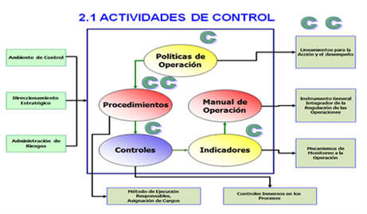
Composición de un bucle de retroalimentación
Estos bucles se componen por una serie de variables susceptibles de ser controladas durante el proceso de retroalimentación: por ejemplo, la temperatura corporal o la presión sanguínea.
Receptores en el organismo: son sensores que perciben cualquier cambio en estas variables.
El centro de control del sistema: toma una decisión según la información recibida.
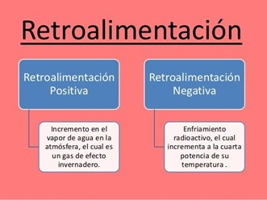
la retroalimentación positiva se asocia a la introducción de inestabilidad en el mismo. Hay una reacción en cadena que irrumpe con el estado del sistema, estimulando el crecimiento continuo y acelerado de alguna acción, así como de sus efectos.
Promueve el cambio en el estado de un sistema.
Ocurre con menor frecuencia en los procesos biológicos del ser humano.
Sus resultados son exponenciales.
No es común que haya retroalimentación positiva en el proceso de homeostasis.
Puede ser causar un círculo vicioso, ya que degenera un estado de equilibrio.
Es común que factores externos deban entrar en juego para detener un proceso de retroalimentación positiva.
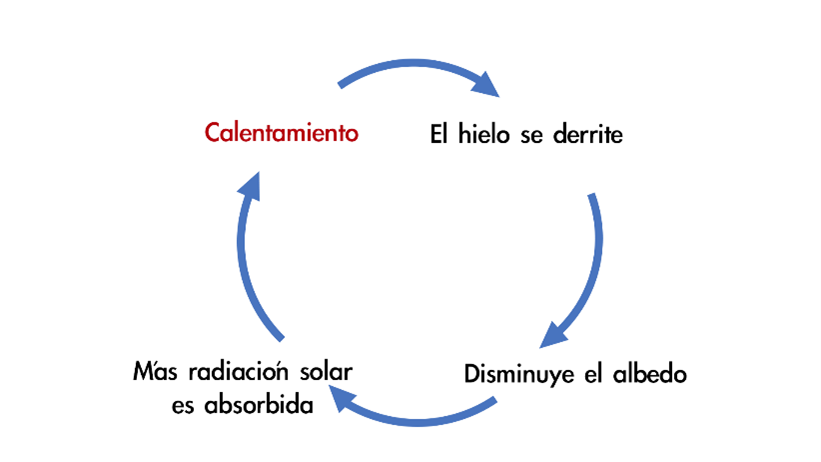
Reduce las alteraciones que son introducidas en un sistema.
Es más común en los procesos biológicos del cuerpo humano.
Minimiza el ritmo en el que se produce una acción (recuperando el estado original del sistema).
Se relaciona con el proceso de homeostasis.
Sus efectos no son exponenciales.
Es común que un proceso de retroalimentación negativa se detenga por sí solo cuando el equilibrio ha sido reestablecido.
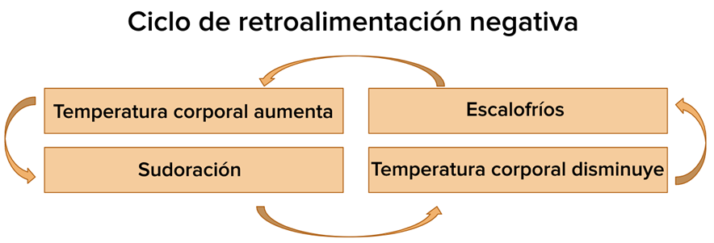
- Análisis de un sistema ya existente para comprender, mejorar, ajustar o predecir su comportamiento.
- Análisis como paso previo al diseño de un nuevo sistema-producto.
- Requerimientos funcionales: son aquellos que describen cualquier actividad que este deba realizar, en otras palabras, el comportamiento o función particular de un sistema o software cuando se cumplen ciertas condiciones. Por lo general, estos deben incluir funciones desempeñadas por pantallas específicas, descripciones de los flujos de trabajo a ser desempeñados por el sistema y otros requerimientos de negocio, cumplimiento, seguridad u otra índole. puede ser una descripción de lo que un sistema debe hacer. Este tipo de requerimiento específica algo que el sistema entregado debe ser capaz de realizar.
- Requerimientos no funcionales: Estos requerimientos son restricciones sobre los servicios y funcionalidades ofrecidos por el sistema. Estos incluyen restricciones en el tiempo que se debe demorar un proceso, restricciones sobre el proceso de desarrollo y estándares. Suelen presentar dificultades en su definición dado que su conformidad o no conformidad podría ser sujeto de libre interpretación, por lo cual es recomendable acompañar su definición con criterios de aceptación que se puedan medir. Algunos ejemplos de aspectos solicitables son la disponibilidad, el testeo, el mantenimiento, la facilidad de uso, etc.
- Requerimientos de dominio: Estos son requerimientos que provienen del dominio de aplicación del sistema y reflejan características y restricciones de ese dominio. Estos pueden ser funcionales o no funcionales. Los requerimientos del dominio son importantes debido a que a menudo reflejan loa fundamentos del dominio de aplicación.
- Mejor soporte a la planeación y al control de proyectos.
- Modelar sistemas (y no sólo de software) utilizando conceptos orientados a objetos.
- Alta reutilización y minimización de costos.
- Encaminar el desarrollo del escalamiento en sistemas complejos de misión crítica.
- Diagramas de secuencia: Suelen usarse para representar objetos software y el intercambio de mensajes entre ellos, representando la aparición de nuevos objetos de izquierda a derecha. 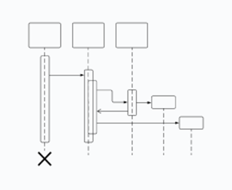
- Diagramas de clases: Puede ayudarte a modelar sistemas de diversas formas. Uno de los tipos más populares en el UML es el diagrama de clases. Popular entre los ingenieros de software para documentar arquitectura de software, los diagramas de clases son un tipo de diagrama de estructura porque describen lo que debe estar presente en el sistema que se está modelando. 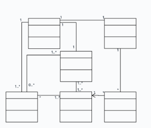
- Diagramas de colaboración: también se conocen como diagramas de comunicación. Pueden demostrar cómo se comunican los objetos para ejecutar las acciones específicas o un aspecto de un caso de uso. Los diseñadores pueden usar diagramas de colaboración para explicar e identificar los roles de los objetos que realizan un flujo específico de eventos en un caso de uso. 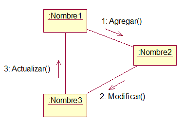
- En observación pasiva, el observador no hace preguntas, limitándose solo a tomar notas y a no interferir en el desempeño normal de las operaciones.
- En observación activa, el observador puede conversar con el usuario.
- Las entradas y salidas de la información de control se ubican en la parte superior de cada recuadro.
- Las excepciones se muestran en la parte inferior del recuadro. Si existen varias excepciones posibles, éstas se encierran en un recuadro.
- Los datos proporcionados desde un punto de vista o proporcionados a éste se representan como elipses.
- Requerimientos no funcionales de producto: Suele referirse a limites o restricciones sobre el comportamiento del sistema, por lo cual establece límites y restricciones sobre lo que los diseñadores (arquitectos de software) e ingenieros de software pueden hacer. Algunos de estos requerimientos pueden ser fáciles de cuantificar, por ejemplo, el desempeño y la confiabilidad, pero otros son más difíciles como por ejemplo usabilidad y adaptabilidad.
-
3 requerimientos de producto:
- Requerimientos de usabilidad: La usabilidad se define como el esfuerzo que necesita hacer un usuario para aprender, usar, ingresar datos e interpretar los resultados obtenidos de un software de aplicación. En tiempos recientes, la usabilidad ha adquirido mucha importancia, en especial ante la demanda de desarrollo de software para móviles y tabletas.
- Requerimientos de eficiencia: Son aspectos que indican la proporción entre el nivel de cumplimiento del software y la cantidad de recursos necesitados bajo condiciones establecidas. Las subcaracterísticas son: comportamiento en el tiempo, comportamiento según otros recursos.
- Requerimientos de seguridad: Capacidades funcionales o no funcionales que debe tener un sistema para cumplir atributos en el área de seguridad de tecnología de información, seguridad de datos, seguridad lógica, control de acceso a información (restricciones de acceso), autenticidad de la información, privacidad, entre otros aspectos.
- Requerimientos no funcionales organizacionales: Se derivan de las políticas y procedimientos de la organización como por ejemplo estándares de procesos o requerimientos de implementación. Pueden incluir metodologías de desarrollo de software, estándares de programación (codificación) y herramientas de soporte al desarrollo de software (por ej. Herramientas CASE) que deben usarse (siguiendo las políticas de la organización), también reportes a la gerencia que deben proveerse, entre otros.
-
3 requerimientos de organizacionales:
- Requerimientos de entorno: Describen el ambiente operativo en el que se debe desenvolver el sistema.
- Requerimientos operacionales: Procedimientos operativos que describen como será usado el sistema dentro del contexto de la organización.
- Requerimientos de desarrollo: Lenguaje de programación a usar, estándares de codificación, patrones (y anti-patrones) de diseño y programación, herramientas para gestionar el desarrollo de software, entorno de desarrollo de software (ambiente de desarrollo), entorno de pruebas de software (ambiente de pruebas), entre otros aspectos.
- Requerimientos no funcionales externos: Este tipo de requerimientos incluyen limitaciones de índole económica, interacción o necesidad del sistema de interoperar con otros sistemas, requerimientos regulatorios en el área de salud, seguridad industrial o protección de datos, requerimientos legales concernientes con licencias, regulaciones o certificaciones que necesita el producto según la industria en el que se desempeñe, entre otros.
2. Entropía como un elemento desorganizador.
Semana 7
1. Subsistemas de control.
El subsistema de control es el encargado de asegurarse que el desempeño del sistema sea el correcto, ya que brinda una retroalimentación de forma tal que permite a los gerentes tomar acciones correctivas en caso de ser necesarias.
Los sistemas en general poseen una característica que los lleva a no solo permanecer sino a crecer y expandirse (principio de organicidad).
Para poder llevar a cabo esta función es indispensable que se desarrolle una capacidad de adaptación con el entorno que rodea al sistema, es decir, debe controlar su conducta con el fin de regularla de un modo conveniente para su supervivencia, y esto lo logra a través de una retroalimentación negativa y autocontrol.
- Ejemplos:
2. Generalidades de la retroalimentación positiva y la retroalimentación negativa.
La retroalimentación positiva favorece el cambio introducido en el sistema, aumentando el estímulo que irrumpió en el sistema. En el caso de la retroalimentación negativa, esta busca que el equilibrio o estado original del sistema se mantenga, reduciendo el estímulo que produjo el cambio.
El sistema que pasa por el proceso de retroalimentación puede ser un organismo natural (cualquier ser vivo, órganos del cuerpo), un ente social (un partido político, una compañía, un sistema económico) o de otra índole (un dispositivo electrónico, un plan de negocios).
Características de la retroalimentación positiva
La retroalimentación negativa reacciona ante un estímulo e intenta detenerlo, reduciendo su impacto. El objetivo es el de regresar el sistema a su estado original.
Por ejemplo, la temperatura corporal se regula a través de la retroalimentación negativa. Ante una subida en la temperatura del cuerpo, este reacciona produciendo sudor. De esta forma, el sudor permite que el cuerpo se enfríe.
Características de la retroalimentación negativa
Semana 8
Análisis de Sistemas, Cual es el papel del analista de sistemas.
Es uno de los procesos de organización o diseño que toda empresa desarrolla; con el fin de estudiar o evaluar el problema que se presenta y la forma de cómo se opera en la compañía; para así poder corregir e interpretar la información obtenida proyectando mejoras favorables para la empresa. Dependiendo de los objetivos del análisis, podemos encontrarnos ante dos problemáticas distintas:
Consiste en definir el problema, identificar sus causas, especificar la solución e identificar los requerimientos de información que debe cumplir una solución de sistemas. El analista de sistemas crea un mapa de la organización y los sistemas existentes, en el cual se identifica a los propietarios y usuarios principales de los datos, junto con el hardware y software existente.
3 tipos de sistemas de información
1. Sistemas de Información de Gestión: Es un conjunto de herramientas organizativas, técnicas, tecnológicas y de información que se integran en un único sistema para recoger, almacenar, procesar y producir información destinada a realizar funciones de gestión. son un tipo de sistemas de información que recopilan y procesan información de diferentes fuentes para ayudar en la toma de decisiones en lo referente a la gestión de la organización.

2. Sistemas de Información Ejecutiva: Proporcionan un acceso rápido a la información interna y externa, presentada a menudo en formato gráfico, pero con la capacidad de presentar datos básicos más detallados si es necesario. Este sistema dispone de un enfoque con interfaces de usuario y pantallas gráficas fáciles de usar. Muchas empresas lo utilizan porque proporciona informes sólidos y capacidades de desglose.
3. Sistemas de procesamiento de transacciones: Son los sistemas empresariales básicos que sirven al nivel operacional de la organización; sistema de procesamiento de información para transacciones comerciales que recopila, modifica y recupera todos los datos de transacciones. Se encuentran en el nivel más bajo de la jerarquía organizacional y soportan las actividades cotidianas del negocio.
¿Cuál es el papel del analista de sistemas?
Un analista de sistemas ayuda a las empresas u otras organizaciones a utilizar la tecnología informática de forma eficaz y eficiente. También investigan el hardware y el software que forman parte de los sistemas informáticos de una organización, además de las formas en que se utilizan los sistemas.
Requerimientos, Investigación de requerimientos.
Los requerimientos de un sistema de software, cuando se ven en su conjunto son extensos y detallados, y además contienen múltiples relaciones entre sí. Es una característica que debe incluirse en un nuevo sistema ,la cual es proporcionada normalmente por los usuarios.
Los requerimientos se caracterizan de la siguiente forma:
Investigación de requerimientos: Es el estudio y documentación de la necesidad del usuario o de un sistema ya existente usando para ello técnicas como el análisis de flujo de datos y análisis de decisión. Es aquí donde se debe y se pueden aplicar. entrevistas, cuestionarios, observación y revisión de documentos existentes, entre otros.
UML
Es una herramienta propia de personas que tienen conocimientos relativamente avanzados de programación y es frecuentemente usada por analistas funcionales (aquellos que definen qué debe hacer un programa sin entrar a escribir el código) y analistas-programadores (aquellos que dado un problema, lo estudian y escriben el código informático para resolverlo en un lenguaje como Java, C#, Python o cualquier otro). Mucha gente piensa por confusión que UML es un lenguaje de programación y esta idea es errónea: UML no es un lenguaje de programación. Como decimos, UML son una serie de normas y estándares que dicen cómo se debe representar algo.
El modelado sirve no solamente para los grandes sistemas, aun en aplicaciones de pequeño tamaño se obtienen beneficios de modelado, sin embargo, es un hecho que entre más grande y más complejo es el sistema, más importante es el papel de que juega el modelado por una simple razón: "El hombre hace modelos de sistemas complejos porque no puede entenderlos en su totalidad".
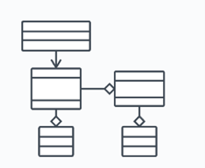4 beneficios de UML
3 TIPOS DE DIAGRAMAS EN UML
Semana 9
Especificación de requerimientos
Es una actividad primordial en el desarrollo de sistemas de software que orienta en todo momento las acciones del equipo de trabajo; la manera de realizarla varía de acuerdo con la naturaleza del proyecto y a las prácticas adoptadas por los desarrolladores. Una forma relativamente reciente de especificar requerimientos es mediante el paradigma orientado a aspectos: un enfoque que propone una manera diferente de conceptualizar las características importantes del software, para administrar mejor la naturaleza transversal de algunas de ellas.
En otras palabras, es servir como medio de comunicación entre clientes, usuarios, ingenieros de requisitos y desarrolladores. En la ERS (Especificación de requisitos del sistema) deben recogerse tanto las necesidades de clientes y usuarios (necesidades del negocio, también conocidas como requisitos de usuario, requisitos de cliente, necesidades de usuario, etc.) como los requisitos que debe cumplir el sistema software a desarrollar para satisfacer dichas necesidades (requisitos del producto, también conocidos como requisitos de sistema o requisitos software).
Estructura básica y dependencias externas
La ERS es el principal producto del proceso de Ingeniería de Requisitos junto con los modelos conceptuales que se incluyen en el Análisis del Sistema (DAS). Aunque existen diversas propuestas sobre su contenido y el número de documentos en los que puede dividirse, en el contexto de MADEJA se asumirá que la ERS es un documento que contiene tanto las necesidades de negocio de clientes y usuarios, como la propuesta de solución de los ingenieros de requisitos (requisitos del sistema a desarrollar, o requisitos de producto en terminología de CMMI-DEV).
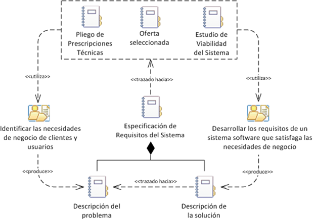Estructura detallada y dependencias internas
La estructura detallada de la ERS puede verse en la siguiente figura, en la que también se muestran las tareas que producen cada uno de sus contenidos. No se han incluido las tareas relacionadas directamente con la calidad de los requisitos, Analizar los requisitos del sistema, Verificar la calidad de los requisitos del sistema y Validar los requisitos del sistema, porque su impacto en la ERS consiste en mejorar la calidad de su contenido y no en producirlo directamente.
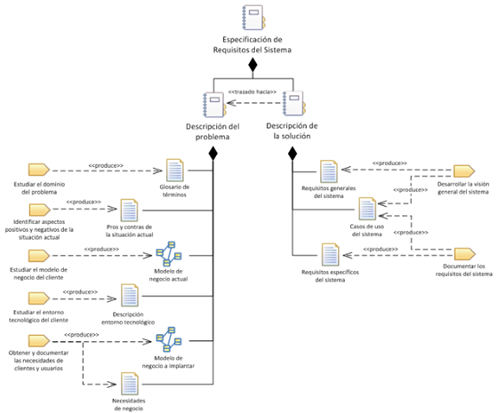La importancia de especificar los requerimientos
Los requerimientos de los sistemas deben ser especificados sin ambigüedad antes de seguir adelante en el proceso de desarrollo. Sin embargo, en la realidad existen aplicaciones para las cuales esta especificación nunca se lleva a cabo, o se realiza de manera superficial; estas prácticas impiden fijar metas objetivas, realizar evaluaciones de manera efectiva y llevar un control adecuado de la evolución de los requerimientos durante el ciclo de vida del proyecto (Braude, 2008).
métodos para investigar requerimientos
1 .Entrevistas: Son útiles para obtener y documentar información detallada sobre los requerimientos y sus niveles de granularidad. El éxito de las entrevistas depende del grado de conocimiento del entrevistador y entrevistado, disposición del entrevistado de suministrar información, buena documentación de la discusión y en definitiva de una buena relación entre las partes.
2. Encuetas o cuestionarios: El éxito de las entrevistas depende del grado de conocimiento del entrevistador y entrevistado, disposición del entrevistado de suministrar información, buena documentación de la discusión y en definitiva de una buena relación entre las partes. El inconveniente es que la respuesta puede ser limitada, ya que es posible que no tenga mucha importancia para los encuestados llenar el cuestionario.
3. Tormenta de ideas ( Brainstorming ): Es una técnica de reuniones en grupo cuyo objetivo es la generación de ideas en un ambiente libre de críticas o juicios. Como técnica de recopilación de información de requisitos, la tormenta de ideas puede ayudar a generar una gran variedad de vistas del problema y a formularlo de diferentes formas, sobre todo al comienzo del proceso de ingeniería de requisitos, cuando todavía los requisitos están muy difusos.
4. Observación: Consiste en la observación directa de las prácticas profesionales que se realizan habitualmente en la organización para la que se va a desarrollar el software. Como sabemos, en muchos casos los procesos son una cosa en papel y otra muy diferente en la práctica. Los observadores experimentados saben qué buscar y cómo evaluar la relevancia de lo que observan.
5. Escenarios: Estos se utilizan para documentar el comportamiento del sistema cuando se le presentan eventos específicos. Cada evento de interacción distinto, o la selección de un servicio del sistema, se documentan como un escenario de eventos distinto. Los escenarios de eventos incluyen una descripción del flujo de datos y las acciones del sistema, y documenta las excepciones que puedan surgir.
3 convenciones para los diagramas utilizados en los escenarios de eventos son:
6. ETHICS (Implementación Efectiva de Sistemas Informáticos desde los puntos de vista Humano y Técnico): Constituye un método bastante evolucionado para fomentar la participación de los usuarios en los proyectos. Creado por E. Mumford en 1979, coordina la perspectiva social de los sistemas con su implementación técnica. Un sistema no tiene éxito si no se ajusta a los factores sociales y organizacionales que rigen a la empresa. Se busca la satisfacción de los empleados en el trabajo a través de estudios integrales.

Requerimientos funcionales y no funcionales.
Requerimientos funcionales
Los requisitos funcionales son declaraciones de los servicios que prestará el sistema, en la forma en que reaccionará a determinados insumos. Cuando hablamos de las entradas, no necesariamente hablamos sólo de las entradas de los usuarios. Pueden ser interacciones con otros sistemas, respuestas automáticas, procesos predefinidos. En algunos casos, los requisitos funcionales de los sistemas también establecen explícitamente lo que el sistema no debe hacer.
Muchos de los problemas en la ingeniería de software (hablando sobre el proceso de desarrollo en sí mismo) comienzan con especificaciones de requisitos inexactas. Es natural que un Analista de Negocio (o quien sea que esté definiendo y documentando los requerimientos del sistema) tome algunas suposiciones como conocimiento universal, o dé por sentado algún comportamiento. Pero recuerde, también es natural que un desarrollador de sistemas interprete un requisito ambiguo de la manera más simple posible, para simplificar su implementación.
Ejemplos Muchos de los problemas en la ingeniería de software (hablando sobre el proceso de desarrollo en sí mismo) comienzan con especificaciones de requisitos inexactas. Es natural que un Analista de Negocio (o quien sea que esté definiendo y documentando los requerimientos del sistema) tome algunas suposiciones como conocimiento universal, o dé por sentado algún comportamiento. Pero recuerde, también es natural que un desarrollador de sistemas interprete un requisito ambiguo de la manera más simple posible, para simplificar su implementación.
Requerimientos no Funcionales
Se trata de requisitos que no se refieren directamente a las funciones específicas suministradas por el sistema (características de usuario), sino a las propiedades del sistema: rendimiento, seguridad, disponibilidad. En palabras más sencillas, no hablan de “lo que” hace el sistema, sino de “cómo” lo hace. Alternativamente, definen restricciones del sistema tales como la capacidad de los dispositivos de entrada/salida y la representación de los datos utilizados en la interfaz del sistema.
se originan en la necesidad del usuario, debido a restricciones presupuestarias, políticas organizacionales, la necesidad de interoperabilidad con otros sistemas de software o hardware, o factores externos tales como regulaciones de seguridad, políticas de privacidad, entre otros.
Ejemplo: Usabilidad (Fácil de usar e interfaces intuitivas), la seguridad (El sistema estará restringido bajo contraseñas cifradas y usuarios definidos), la multiplataforma (El sistema deberá funcionar en distintos tipos de plataforma y diferentes sistemas operativos), el rendimiento (El sistema debe soportar el manejo de gran cantidad de información durante su proceso) y el desempeño (El sistema no presentara problemas para su manejo e implementación).
Tres tipos de requerimientos no funcionales
Factibilidad económica, operativa y técnica
Factibilidad económica: Es el análisis de los costos e ingresos de un proyecto en un esfuerzo por determinar si resulta o no lógico y posible poder completarlo. Es un tipo de análisis de costo-beneficio del proyecto examinado, que evalúa si es posible implementarlo. El costo y el tiempo son los factores esenciales involucrados en este campo de estudio. Se evalúa el costo de desarrollo y el costo de operación. También se calcula el marco de tiempo aproximado para recibir los retornos contra la inversión, tomando en cuenta el valor futuro del proyecto.
Factibilidad operativa: Es una medida del correcto funcionamiento de una posible solución a los problemas dentro de una organización. También es una medida de los sentimientos que despierta un sistema o un proyecto en las personas que en él participan, miden la urgencia del problema y la aceptabilidad de la solución. Se refiere a todos aquellos recursos donde interviene algún tipo de actividad (Procesos), depende de los recursos humanos que participen durante la operación del proyecto. Durante esta etapa se identifican todas aquellas actividades que son necesarias para lograr el objetivo y se evalúa y determina todo lo necesario para llevarla a cabo. Si los usuarios están contentos con el sistema actual, no tienen problemas con su manejo y por lo general no están involucrados en la solicitud de un nuevo sistema, habrá una fuerte resistencia a la implementación del nuevo sistema. Las posibilidades de que entre en funcionamiento son bajas.
Factibilidad técnica: Consiste en determinar inicialmente si para desarrollar tu negocio requieres de maquinarias, equipos, tecnología y conocimientos o experiencia en un área específica, que puede ser parte de un proceso fundamental o de apoyo como un programa de contabilidad, lo cual depende del tipo de negocio.
El analista debe averiguar si es posible actualizar o incrementar los recursos técnicos actuales de tal manera que satisfagan los requerimientos bajo consideración. Sin embargo, en ocasiones los “agregados” a los sistemas existentes son costosos y fructíferos, simplemente porque no cumplen las necesidades con eficiencia.